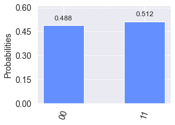

Bell States
Bell state is constructed with application of \(\textbf{Hadamard} \) and \(\textbf{CNOT}\) gates in two qubit system.
%matplotlib inline import numpy as np import IPython import matplotlib.pyplot as plt from qiskit import QuantumCircuit from qiskit.tools.jupyter import * from qiskit.visualization import * import seaborn as sns sns.set()
from helper import *
Bell State Circuit
\( \beta_{00} \)
def circuit_00(): qc = QuantumCircuit(2,2) qc.h(0) qc.barrier() qc.cx(0, 1) return qc
- Circuit Diagram
bell_00 = circuit_00()
drawCircuit(bell_00)

-
Two qubit system (state vector)
- Initial state = |00>
- After application of Hadamard Gate: \( \frac{1}{\sqrt{2}}|00\rangle + \frac{1}{\sqrt{2}}|01\rangle \)
- After application of CNOT Gate: \( \frac{1}{\sqrt{2}}|00 \rangle + \frac{1}{\sqrt{2}}|11 \rangle \)
def getPhaseSeq(): phaseDic = [] qc0 = QuantumCircuit(2,2) qc1 = QuantumCircuit(2,2) qc1.h(0) qc2 = QuantumCircuit(2,2) qc2.h(0) qc2.cx(0, 1) for iqc in [qc0,qc1,qc2]: phaseDic.append(getPhase(iqc)) return phaseDic
drawPhase(getPhaseSeq())

bell_00 = circuit_00()
simCircuit(bell_00)

- Single qubit states (tensor product)
\(\textbf{Question:}\) Can you write Bell state as a tensor product of single qubit state?
\( \textbf{Answer} \): No, it is not possible. It is hard to realise.
$$\left( \begin{array}{cc} p \\ q \end{array} \right) \otimes \left( \begin{array}{cc} r \\ s \end{array} \right)= c \left( \begin{array}{cc} m \\ 0 \\ 0 \\ n \end{array} \right) $$
- Matrix element (tensor product)
\( \textbf{Question:}\) Can we write matrix represented by the Bell circuit as a tensor product of fundamental gate matrices?
bell_00 = circuit_00()
drawCircuit(bell_00)

Based on above Bell circuit, lets construct the matrix representation of the circuit using fundamental gates matrices involved in the circuit.
$$H = \frac{1}{\sqrt{2}} \left( \begin{array}{cc} 1 & 1 \\ 1 & -1 \end{array} \right); I = \frac{1}{\sqrt{2}} \left( \begin{array}{cc} 1 & 0 \\ 0 & 1 \end{array} \right); \text{CNOT} = \left( \begin{array}{cccc} 1 & 0 & 0 & 0 \\ 0 & 0 & 0 & 1 \\ 0 & 0 & 1 & 0 \\ 0 & 1 & 0 & 0 \\ \end{array} \right)$$
- Before first barrier
$$ I \otimes H = \left( \begin{array}{cc} H & 0 \\ 0 & H \end{array} \right) $$
- After first barrier
\( \text{CNOT} \)
- Net operation before measurement
\( U = \text{CNOT} \times (I \otimes H) \)
Lets express U matrix using numpy library.
I = np.eye(2,2) H = 1/np.sqrt(2)*np.array([[1,1],[1,-1]]) CNOT = np.array([[1,0,0,0],[0,0,0,1],[0,0,1,0],[0,1,0,0]]) I_kron_H = np.kron(I,H) U = np.dot(CNOT,I_kron_H) print(U)
[[ 0.70710678 0.70710678 0. 0. ] [ 0. 0. 0.70710678 -0.70710678] [ 0. 0. 0.70710678 0.70710678] [ 0.70710678 -0.70710678 0. 0. ]]
We can also observe final ket vector by multiplying it with U matrix.
ket_00 = np.array([1,0,0,0]) np.dot(U,ket_00)
array([0.70710678, 0. , 0. , 0.70710678])
Infact we can check our matrix from our circuit shown below by implementing Q is kit's "unitary_simulator".
bell_00 = circuit_00()
plotMatrix(bell_00)